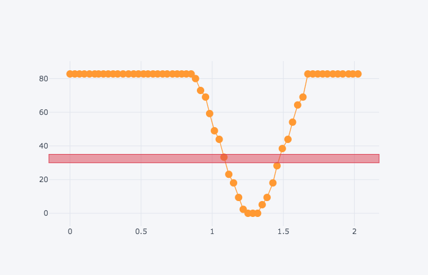

3 The design engineer as detective¶
If you have never before experienced a disappointment when building systems, then welcome to the world of engineering design!
If you struggled to complete any of the previous challenges, then take heart. Solving practical engineering problems often requires several attempts as you come to understand the problem better. In some cases, you may even come to realise that the problem you first thought you were trying to solve turns out not to be the actual problem at all.
Even if you have identified the problem correctly, designing the solution may not be straightforward. In many cases, design is characterised by defining a set of requirements, translating these into a specification, generating one or more possible solutions to the specified problem, identifying which one to implement, and then evaluating the outcome.
If the ‘solution’ is not satisfactory, then it is necessary to go back and try to formulate another possible solution, or maybe even check that you have correctly identified the requirements based on what you may have learned about the problem by trying to meet the requirements of the previously specified design.
This is called the design cycle.
!["A diagram of the design cycle, drawn as a simple flow chart. This starts in an oval labelled ‘Start’ and finishes in another oval labelled ‘End’. From ‘Start’ an arrow leads to a box labelled ‘Generate’;from here an arrow leads to a box ‘Evaluate’. From ‘Evaluate’ there are two arrows: one leads directly to the ‘End’, the other loops back to ‘Generate’. Thus there are two paths in the diagram, one straight from Start to Generate to Evaluate to End, the other that forms a loop around Generate and Evaluate."](../_images/flowchart_design_cycle.png)
During the design cycle, candidate solutions are generated and evaluated. If the design fails to meet expectations, then a new or updated design must be generated. If the evaluation of the design is satisfactory, then the design can be accepted and the process may end.
In a continuous improvement design cycle, the original design may be used but it may also be reconsidered. If an improvement is found, then the new design may be both adopted and passed back round the cycle for further reconsideration.
3.1 Following the design cycle¶
In the lollipop line-following challenge, the system was specified according to the requirement that the robot would go all the way round the track and stop at the red bar. I generated a solution based on my ‘model’ of the system.
When I first ran the program, my evaluation was that the system did not work: for some reason, the robot kept stopping! (Even if it had worked first time, it’s possible that the solution was not very good either in terms of the way the robot behaved, or in terms of how the program was written.)
Under these circumstances, the design engineer looks for reasons why things went wrong, using all the available information. Sometimes this involves devising experiments. It’s rather like being a detective, trying to piece together the solution.
from nbev3devsim.load_nbev3devwidget import roboSim, eds
%load_ext nbev3devsim
%load_ext nbtutor
Here’s the program I used for the lollipop challenge at first:
%%sim_magic_preloaded --background Lollipop
colorLeft = ColorSensor(INPUT_2)
colorRight = ColorSensor(INPUT_3)
print(colorLeft.reflected_light_intensity)
while ((colorLeft.full_reflected_light_intensity < 30)
or (colorLeft.full_reflected_light_intensity > 40)):
intensity_left = colorLeft.full_reflected_light_intensity
#intensity_right = colorRight.reflected_light_intensity
print(intensity_left)
if intensity_left < 50:
left_motor_speed = SpeedPercent(0)
right_motor_speed = SpeedPercent(40)
else:
left_motor_speed = SpeedPercent(40)
right_motor_speed = SpeedPercent(0)
tank_drive.on(left_motor_speed, right_motor_speed)
One of the main assumptions underlying my first program was that the colours could be separated by thresholds and that I would use a while loop to loop through some edge-follower code if I didn’t see red.
For the stopping decision (‘Have I seen red?’) I checked whether or not the full reflected light percentage was between 30% and 40%. This was based on the fact that the red line gives a full reflected light percentage of 33.3%, the solid grey background has a reading of 82.75% and the black background has a reading of 0%.
But when I downloaded and ran the program (which you can try too), the robot kept stopping on the line. So what was going on?
Let’s try a simple test program to get a better idea of what the robot is actually perceiving.
We’ll explore the data at leisure in the notebook, so run the following code cell to clear the notebook datalog:
# Clear the datalog
%sim_data --clear
For our test case, we’ll get the robot to turn on the spot so that the sensor crosses over the black line and the grey background a couple of times.
Download and run the following program in the simulator to collect sensor data as the robot spins slowly on the spot for three seconds, grabbing data into the datalog by printing it to the robot display terminal:
%%sim_magic_preloaded --background Lollipop -R
import time
tank_drive.on(SpeedPercent(10), SpeedPercent(-10))
for i in range(150):
print('Colour: ' + str(colorLeft.full_reflected_light_intensity ))
time.sleep(0.02)
say("All done")
We can now use some magic to grab the data from the datalog and put it into a pandas dataframe. previewing the first few rows of the dataframe:
data_df = %sim_data
data_df.head()
The cufflinks package adds support for plotting charts using the plotly package directly from pandas dataframes. Whilst recent updates to the plotly package add native support for plotly charts to pandas plotting, cufflinks still has some additional nice features that are useful for our purposes, such as the ability to overplot individual data point markers on a plotly chart as well as highlight different value ranges.
import cufflinks as cf
# By default, cufflinks will try to use
# an online plotly mode
cf.go_offline()
We can now create a plotly chart using markers to identify each sensor reading sample point as well as a line that connects them.
A horizontal band, identified by the hband=[(MIN_Y, MAX_Y)] parameter, adds a horizontal band to the chart corresponding to the thresholded range I was using to identify whether the robot had encountered the red line:
data_df.iplot( x = 'time', y = 'value',
mode='markers+lines', hspan=[(30,40)])
Here’s a screenshot of part of the trace of light readings I got from an earlier experiment I carried out as the simulated robot went from the grey background, over the black line and back to the grey background:

The vertical scale shows sensor values on a vertical y-axis scale ranging from 0 to 85 or so (the actual readings in principle range form 0…100 per cent). The horizontal scale is a time base showing a time of 0 to 2 seconds, with a plot every 0.02s (that is, about every fiftieth of a second. The sensor readings are also joined to form a line. The line starts with high values, starting at a y-value of just over 80. There is then an abrupt fall in the values until they reach a low point of 0 for 3 samples, followed by a return to the high values around 80. On the diagram, I have marked a horizontal band highlighting values between 30 and 35%.
This chart helps to explain why my original program did not work as intended. On the right of the black line, in the transition from black to grey, the simulated robot has recorded a value of about 34, within the thresholded band value I was using to identify the red line.
The sensor value is calculated as some function of the value of several pixels in view of the sensor at any one time and it just so happens that the calculation may return a reading I had associated with the red line.
If a sampled data point falls between the values I used for my threshold settings that were intended to identify the red line, then the robot would have a ‘false positive’ match and stop before it was supposed to.
In fact, the .reflected_light mode in either raw or percentage form or full percentage form is not a good indicator of colour at all.
Based on this investigation, I ended up using a different approach to identify the stopping condition (that is, the presence of the red band); originally, I just tested that the red RGB component was set to 255 but then I realised that this could give a false positive if a solid yellow colour was in view of the sensor (the RGB value for yellow is (255, 255, 0)). So I then iterated my design again and tested that the red value was 255 and the green component was 0. (I really should extend it again to check that the blue value is also zero.)
However, following the discussion at the end of the last notebook regarding noise, I think I should probably change the exact equality test on the red value to a threshold test, such as color_sensor.rgb[0]>250 and that the other values are less than some other threshold value (for example, color_sensor.rgb[1]<15) to allow for noise in the background or the sensor.
As you can see, designing a program often requires a continual process of iterative improvement.
3.2 Optional activity¶
Create, download and run a program in the simulator that drives the robot over the Rainbow_bands background, logging the reflected light sensor data as it does so.
Then either chart the data in the simulator to review it, or grab the datalog into the notebook and view it here at your leisure.
Does the reflected light sensor data allow you to reliably identify each colour band?
3.3 Summary¶
In this notebook, you have seen how an investigative process may be required to help us better understand why any assumptions have made about how our program might work need checking against how it actually works in practice. This is particularly true in cases where the robot appears to behave counter to the way we intended it to behave when we created our program.
We have also seen how the process of design is often an iterative one in which we repeatedly refine and improve our program as we better come to understand the problem and what we are actually trying to achieve.